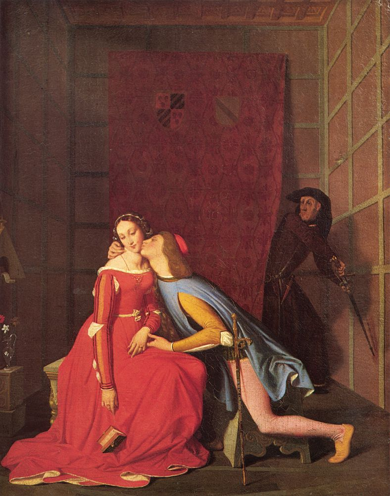

I
Aldatmaya dair en yaygın açıklama, onun aşkın bittiği yerde başladığıdır: İnsan, artık sevmediği için aldatır. Bu açıklama bazen doğrudur. Ama klinikte sık sık karşılaşılan bir durumu açıklamaz: Eşini sevdiğini söyleyen, onu kaybetmekten korkan, onunla bir hayat kurmuş ve bu hayatı sürdürmek isteyen birinin, yine de başka birine yönelmesi. Bu kişi çoğu zaman kendisini de anlamaz. “Neden yaptığımı bilmiyorum” cümlesi, aldatanın en sık kurduğu cümlelerden biridir ve çoğu zaman bir mazeret değil, gerçek bir şaşkınlıktır.
Freud bu şaşkınlığın bir biçimini 1912’de, “Aşk Hayatının En Yaygın Değersizleştirilmesi Üzerine” başlıklı yazısında tarif etti. Freud, bazı erkeklerin aşk hayatında iki akımın birbirinden ayrıldığını gözlemledi: şefkatli akım ile şehvetli akım. Bu erkekler, saygı duydukları, sevdikleri kadınlara karşı cinsel arzu duyamaz; arzu duydukları kadınları ise sevemez, onlara değer veremezler. Freud bunu kısa bir cümleyle özetledi: Sevdikleri yerde arzulamazlar, arzuladıkları yerde sevemezler.1 Freud’a göre bu ayrılığın kökeni, çocukluğun ilk sevgi nesnesinde, anneye ya da onun yerini tutan kişiye duyulan şefkatin, ensest yasağıyla, cinsel arzudan ayrılmak zorunda kalmasındadır. Sevilen kişi, bu ilk nesneye çok benzediğinde, yasağın gölgesi ona da düşer.
Freud bu yapıyı erkeklerde tarif etti; ama bugün bir klinisyen onu kadınlarda da, farklı biçimlerde, görür. Bir ilişki ne kadar güvenli, ne kadar tanıdık, ne kadar “ev” olursa, arzu o kadar başka bir yere, bilinmeyene, yasak olana kayabilir. Aldatma, bu bakımdan, aşkın bittiği yer değil, aşk ile arzunun aynı yerde buluşamadığı yer olabilir.
II
Dante, İlahi Komedya’nın Cehennem bölümünün beşinci kantosunda, şehvet yüzünden lanetlenenlerin rüzgârla savrulduğu ikinci çemberde, iki gölgeyle konuşur: Francesca da Rimini ve kocasının kardeşi Paolo Malatesta. Francesca, aşklarının nasıl başladığını anlatır. Bir gün ikisi baş başa, Mızraklı Şövalye Lancelot’nun Kraliçe Guinevere’e duyduğu aşkın hikâyesini okuyorlardı. Kitapta Lancelot ile Guinevere’in öpüştüğü yere geldiklerinde, Paolo, titreyerek, onu ağzından öptü. Francesca’nın Dante’ye söylediği cümle, edebiyatın en çok alıntılanan cümlelerinden biridir: O kitap ve onu yazan bizim aracımız oldu; o gün daha fazla okumadık.2
Bu sahne, aldatmaya dair önemli bir şeyi gösterir. Paolo ile Francesca’nın arzusu, kendiliğinden, aralarındaki doğal bir çekimden doğmaz; bir üçüncünün, bir kitabın, başkalarının aşk hikâyesinin aracılığıyla doğar. Fransız düşünür René Girard, 1961’de yayımladığı ilk kitabında, büyük romanların arzunun hiçbir zaman doğrudan bir nesneye yönelmediğini, her zaman bir başkasının arzusundan, bir modelden geçtiğini gösterdiğini savundu.3 Lacan bunu kendi diliyle söyler: İnsanın arzusu, Başka’nın arzusudur. Arzuladığımız şey, bir başkasının arzuladığı, ya da bir başkasının arzusunun işaret ettiği şeydir.
Aldatmanın birçok hikâyesinde bu üçüncü yer vardır. Arzu, bazen aldatılan eşin kendisinin bakışından geçer: Eşinin bir başkasına duyduğu ilgiyi fark eden biri, o başkasını arzulamaya başlar. Bazen bir arkadaşın, bir kardeşin, bir rakibin arzusundan geçer. Freud’un en ünlü vakalarından biri, Dora vakası, bu üçgenin karmaşıklığını gösterir: Babasının metresi Frau K. ile onun kocası Herr K. arasında kalan genç kız, Freud’un sandığı gibi yalnızca Herr K.’ya değil, belki daha da çok Frau K.’ya, onun kadınlığının sırrına bağlıdır.4 Aldatma, bazen, bir başkasının nasıl arzuladığını, nasıl arzulandığını öğrenme çabasıdır.
III
Lacan’ın en çok alıntılanan formüllerinden biri, “cinsel ilişki yoktur” cümlesidir. Bu cümle, insanların sevişmediğini söylemez. Söylediği, iki insanın, iki arzunun, birbirini tamamlayacak, birbirine tam olarak karşılık verecek biçimde buluşmadığıdır. Her insan, öbürüyle, kendi fantezisinin, kendi kayıp nesnesinin aracılığıyla ilişki kurar. Aşk, Lacan’a göre, tam da bu buluşamamanın üzerine kurulan şeydir; Lacan’ın sık sık tekrarladığı bir formülle, aşk, sahip olmadığın şeyi vermektir.5
Bu açıdan bakıldığında aldatma, bazen, bu eksikliği kapatma denemesidir. Uzun bir ilişkinin içinde, öbürünün kendisini tamamlamadığı, bir eksiklik bıraktığı fark edilir; ve bu eksiklik, bir başkasında, bir yabancıda giderilecekmiş gibi görünür. Yeni ilişkinin ilk aylarındaki yoğunluk, bu yanılsamanın gücünden gelir: Yeni kişi henüz bir eksiklik göstermemiştir, çünkü henüz bir hayat paylaşılmamıştır. Ama bu yanılsama, çoğu zaman, eski ilişkinin içinde yaşanan eksikliğin aynısıyla yeniden karşılaşmakla sona erer. Aldatmayı tekrarlayan, ilişkiden ilişkiye aynı hikâyeyi yaşayan birinin, bu tekrarın ne söylediğini sorması gerekir.6
IV
Aldatılan için deneyim çok farklıdır. Aldatıldığını öğrenmek, bir travmadır: Geçmiş bir anda yeniden yazılır, sıradan anılar, bir akşam yemeği, bir tatil, bir telefon konuşması, birden başka bir anlam kazanır. Aldatılan kişi bu yeniden yazımı tamamlamak için bilgi arar: Ne zaman başladı, kaç kez oldu, nerede, neden? Her yeni bilgi, bir an rahatlatır, sonra yeni bir soru doğurur. Bu arayışın sonu yoktur, çünkü aranan şey bir bilgi değildir.
Aldatılan kişinin “neden?” sorusu, çoğu zaman, “ben neden yetmedim?” sorusunun bir başka biçimidir. Kıskançlığın en acı yanı, Freud’un da gösterdiği gibi, rakibe duyulan öfkeden çok, kendi değerine dair sarsılmadır. Aldatılan, kendini öbürünün gözünde, rakibin yanında bir eksik olarak görür. Ama bu soru, aldatanın kendi yanıtı bile verilse, kapanmaz; çünkü aldatanın kendisi de çoğu zaman bu yanıtı bilmez. Aldatılanın iyileşmesi, bu soruya bir yanıt bulmakla değil, sorunun kendisinin, kendi değerini başkasının arzusuna bağlamış olmanın, nereden geldiğini anlamakla başlar.7
V
Aldatmanın ardından bir ilişkinin devam edip etmeyeceği, yalnızca o iki insanın verebileceği bir karardır. Bazı ilişkiler biter, bazıları devam eder ve bazen önceki halinden daha dürüst bir yere ulaşır. Psikanalitik çalışmanın burada önerdiği şey, bir karar vermek değil, kararın altında yatan soruları açmaktır. Aldatan için: Bu ilişkide neyi bulamadım, ve onu bir başkasında bulabileceğimi neden düşündüm? Bu benim hayatımda ilk kez mi oluyor? Aldatılan için: Bu deneyim bana, sevgiye ve değerli olmaya dair hangi eski korkumu hatırlattı?
Bu sorular kolay değildir, ve çoğu zaman yalnız sorulamaz. Ama aldatmanın, ister yapılmış ister yaşanmış olsun, bir insanın hayatında bir son değil bir soru olabileceğini gösterirler. Halit Ziya’nın Aşk-ı Memnu’su, Türk edebiyatının bu soruyu en derinden soran romanı, Bihter’in yasak aşkının ardından onun kendi arzusuyla karşılaşmasını anlatır. Dante’nin Francesca’sı ise cehennemde bile, rüzgârın içinde, Paolo’dan ayrılmaz. İki hikâye de aynı şeyi söyler: Aldatma, aşkın dışında değil, onun en karanlık, en az anlaşılmış yerindedir.8
Notlar
- S. Freud, “Über die allgemeinste Erniedrigung des Liebeslebens” (1912), Jahrbuch für psychoanalytische und psychopathologische Forschungen, 4: “Wo sie lieben, begehren sie nicht, und wo sie begehren, können sie nicht lieben.” ↩︎
- Dante Alighieri, La Divina Commedia, Inferno, V, 127–138: “Galeotto fu ’l libro e chi lo scrisse: / quel giorno più non vi leggemmo avante.” Galeotto, İtalyancada Lancelot ile Guinevere arasındaki aşka aracılık eden şövalye Galehaut’nun adıdır. ↩︎
- R. Girard, Mensonge romantique et vérité romanesque, Paris: Grasset, 1961. ↩︎
- S. Freud, “Bruchstück einer Hysterie-Analyse” (1905), Monatsschrift für Psychiatrie und Neurologie, 18. Lacan bu vakayı, Dora’nın Frau K.’ya duyduğu ilginin, “bir kadın nedir?” sorusunu taşıdığını vurgulayarak yeniden okur. ↩︎
- Lacan bu formülü birçok kez kullanır; ayrıntılı bir açılımı için bkz. J. Lacan, Le Séminaire, Livre VIII: Le transfert (1960–1961), yay. haz. J.-A. Miller, Paris: Seuil, 1991, Platon’un Şölen’i üzerine dersler. ↩︎
- Tekrarlayan ilişki örüntüleri üzerine bu sitedeki “Neden Hep Aynı İlişkiyi Yaşıyorum?” yazısına bakılabilir. ↩︎
- Kıskançlık üzerine bu sitedeki “Kıskançlık” yazısına bakılabilir. ↩︎
- Aşk-ı Memnu üzerine bu sitedeki psikanalitik okumaya bakılabilir. ↩︎
Kaynakça
- Dante Alighieri (1321 dolayı). La Divina Commedia: Inferno.
- Freud, S. (1905). Bruchstück einer Hysterie-Analyse. Monatsschrift für Psychiatrie und Neurologie, 18.
- Freud, S. (1912). Über die allgemeinste Erniedrigung des Liebeslebens. Jahrbuch für psychoanalytische und psychopathologische Forschungen, 4.
- Girard, R. (1961). Mensonge romantique et vérité romanesque. Paris: Grasset.
- Halit Ziya Uşaklıgil (1900). Aşk-ı Memnu. İstanbul.
- Lacan, J. (1991). Le Séminaire, Livre VIII: Le transfert (1960–1961). Paris: Seuil.